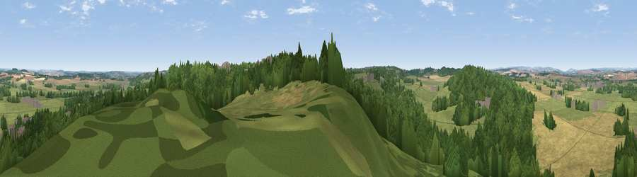

Viewpoint near Sturminster Marshall
#21545 in England · top 39% of its area beats it · near Sturminster Marshall · path 282 mWhere it is
The exact computed spot (SY 95675 97875). Click the marker for map links.
Public access: the nearest public right of way is about 282 m away — the final stretch may cross private land. Computed from Natural England's CRoW access layer and OpenStreetMap rights of way — not the legal definitive map. Always verify locally.
The view, rendered

A 360° render of this exact spot computed from the terrain model, tree cover and land cover — summer colours, afternoon light, calibrated against photographs of famous viewpoints. Real trees, hedges and buildings will differ in detail.
The panorama
Grey silhouette: terrain skyline in each direction (720 bearings, Earth curvature and refraction included). Dashed green: skyline with trees (+15 m) and buildings (+8 m) as obstacles. Blue strip: how far the ground is visible on each bearing.
Where the view opens
Wedge length = distance to the farthest visible ground on that bearing (vegetation-aware). Rings at 10, 25 and 50 km.
What fills the view
47% woodland · 33% grassland · 17% cropland · 2% built-up
Angular shares of the visible panorama (visual magnitude), not map area. Landscape diversity 0.49 (0–1 Shannon).
Key numbers
More beautiful places nearby
The staircase of upgrades: each row has a higher view potential than everything closer. Driving times are estimates from straight-line distance, calibrated against real road routing — check an actual route before setting out.
| Place | Direction | Drive | Score |
|---|---|---|---|
| Viewpoint near Upton | SSE · 4 km | ~9 min | 61.0 |
| Viewpoint near Milton Abbas | WNW · 16 km | ~28 min | 64.2 |
| Viewpoint near Harman's Cross | S · 16 km | ~29 min | 76.9 |
| Viewpoint near Kimmeridge | SSW · 16 km | ~29 min | 82.9 |
| Viewpoint near Kimmeridge | SSW · 17 km | ~29 min | 84.1 |
| Viewpoint near Kimmeridge | S · 18 km | ~32 min | 86.6 |
| Rings Hill | SSW · 20 km | ~33 min | 87.5 |
| Viewpoint near Abbotsbury | WSW · 41 km | ~61 min | 89.0 |
50.78043, -2.06271 · source: screening · position refined by local search. Computed location — check access rights before visiting.